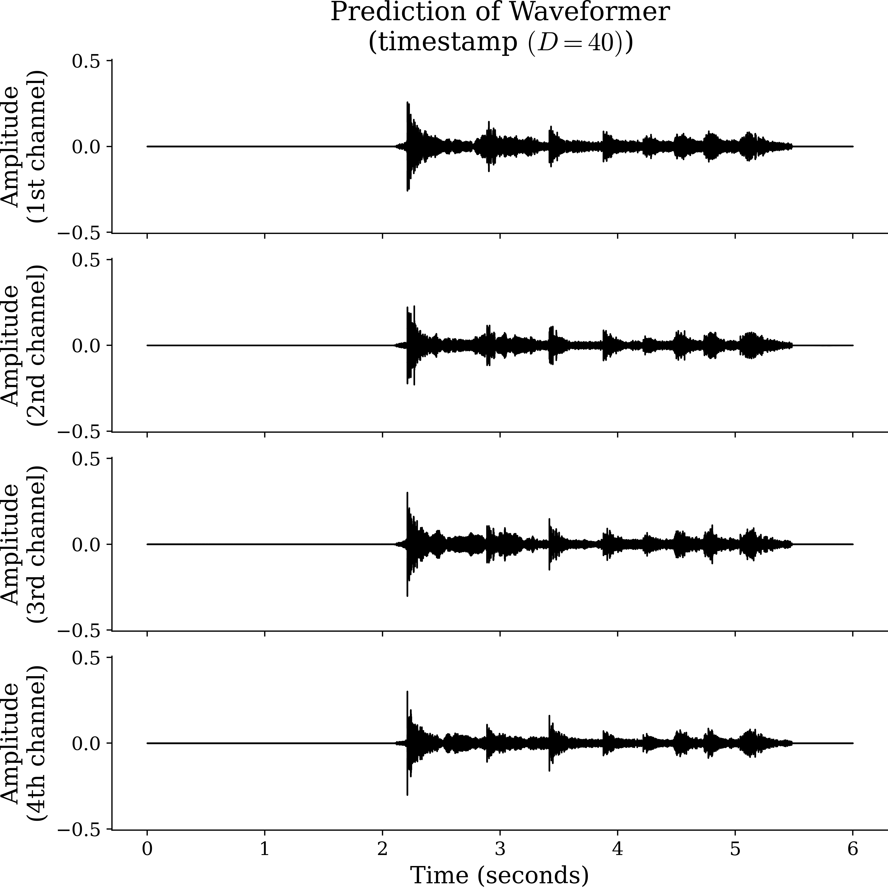
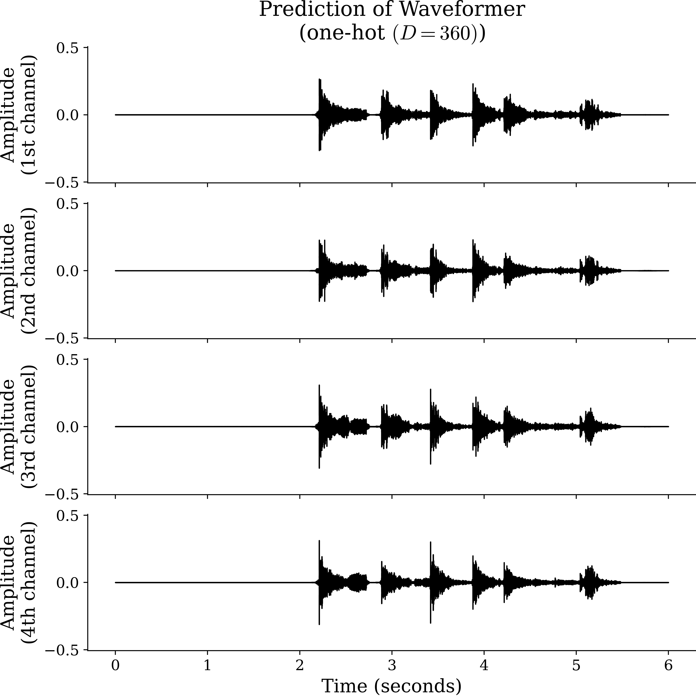
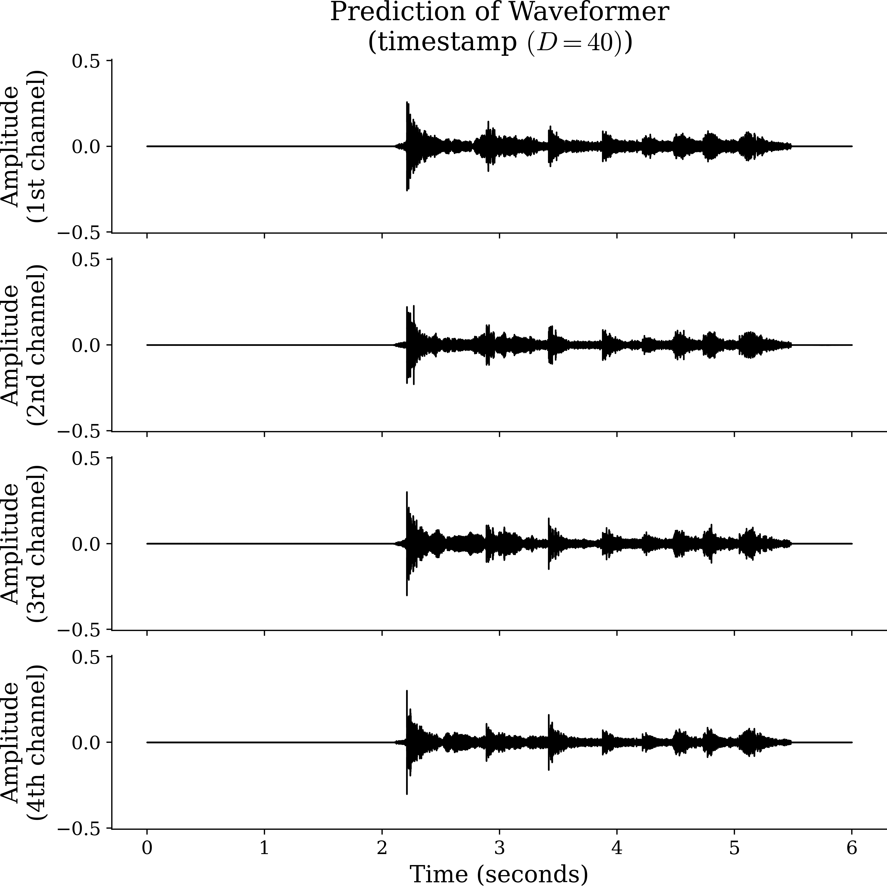
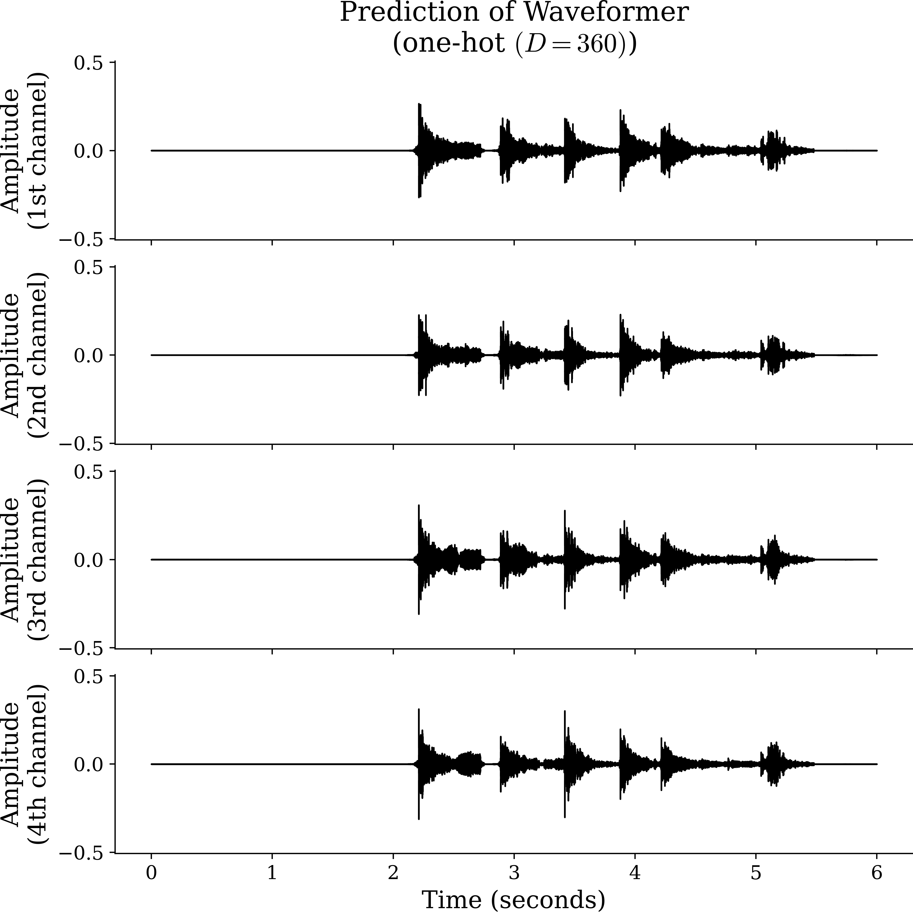
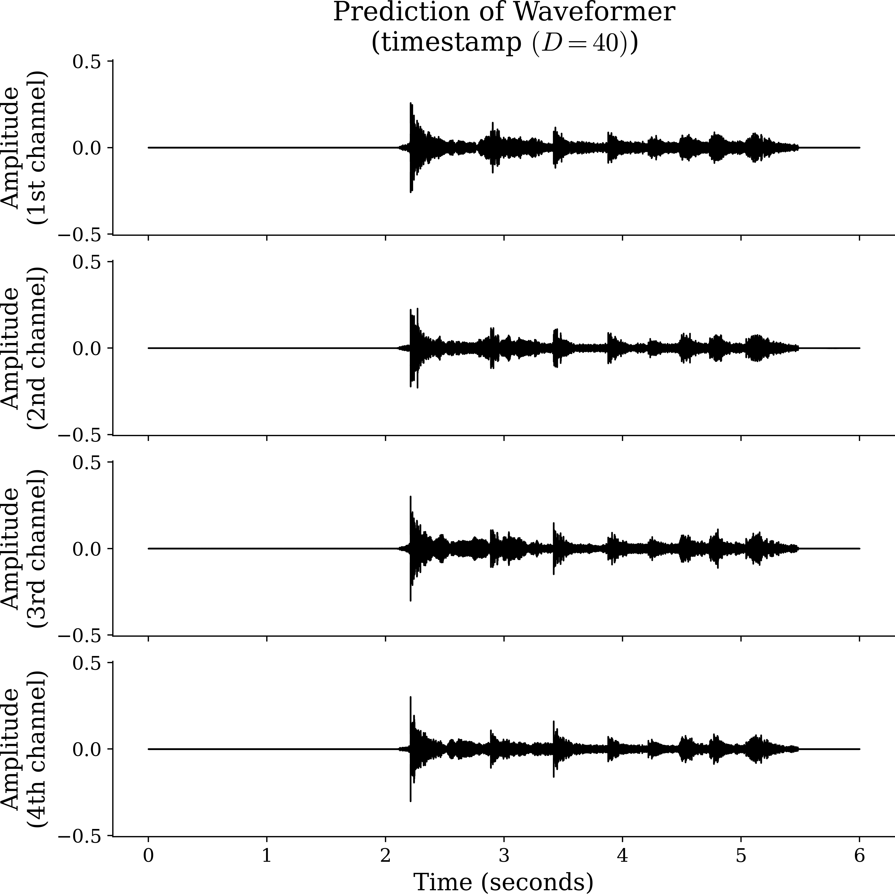
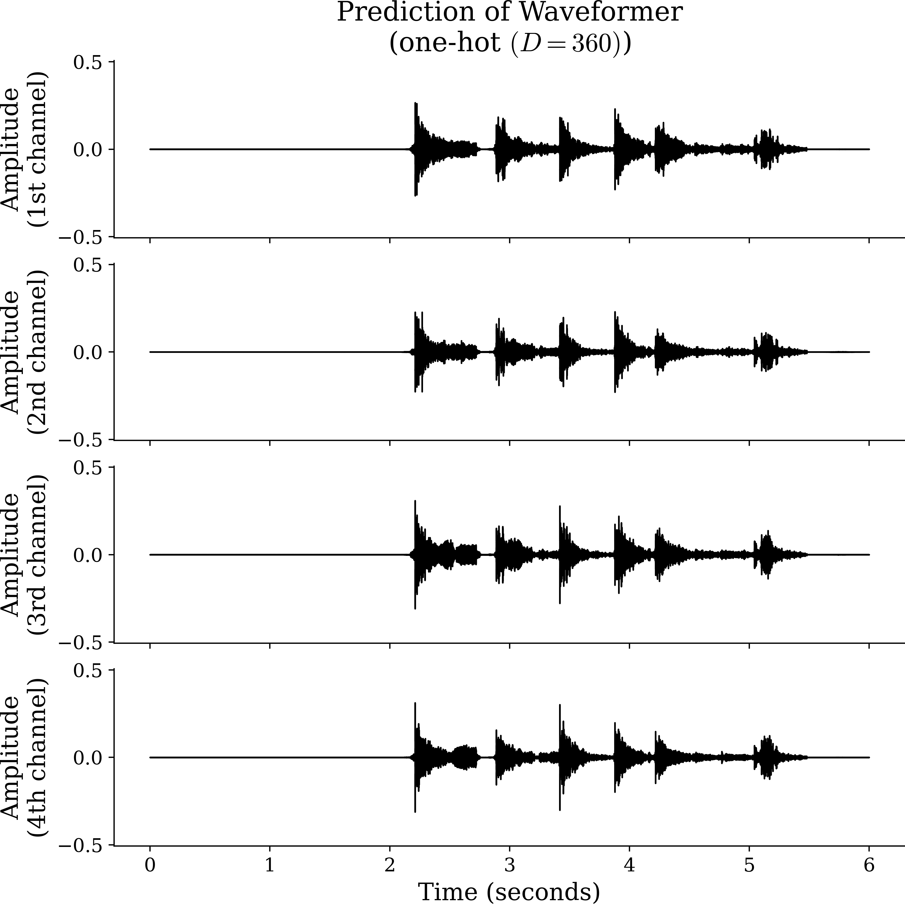
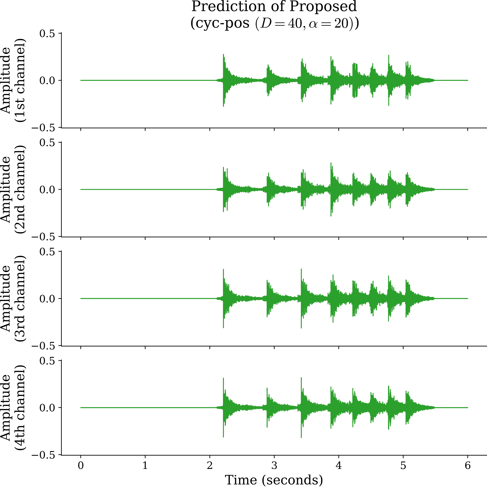
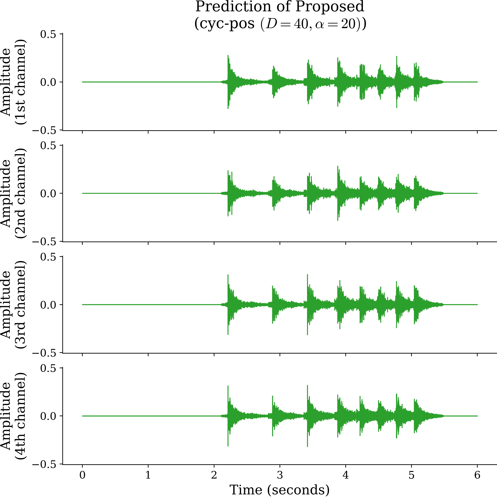

School of Electrical Engineering, KAIST
Abstract
We propose a multichannel-to-multichannel target sound extraction (M2M-TSE) framework for separating multichannel target signals from a multichannel mixture of sound sources. Target sound extraction (TSE) isolates a specific target signal using user-provided clues, typically focusing on single-channel extraction with class labels or temporal activation maps. However, to preserve and utilize spatial information in multichannel audio signals, it is essential to extract multichannel signals of a target sound source. Moreover, the clue for extraction can also include spatial or temporal cues like direction-of-arrival (DoA) or timestamps of source activation. To address these challenges, we present an M2M framework that extracts a multichannel sound signal based on spatio-temporal clues. We demonstrate that our transformer-based architecture can successively accomplish the M2M-TSE task for multichannel signals synthesized from audio signals of diverse classes in different room environments. Furthermore, we show that the multichannel extraction task introduces sufficient inductive bias in the DNN, allowing it to directly handle DoA clues without utilizing hand-crafted spatial features.
Model Architecture
Performance Comparisons across TSE Models and Clues
SNRi and SI-SNRi Change with respect to Target Azimuth Angle

Contents: We provide one sound demo for results of all models.




 
